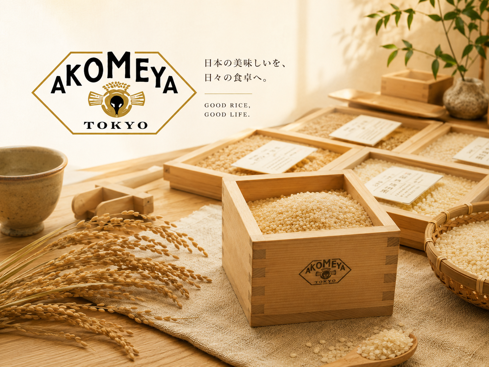

從一碗米飯開始
以日本米為原點，延伸探索能襯托主食與四季餐桌的各種美味。
從一碗剛煮好的米飯開始，
連結日本各地的美味。

AKOMEYA TOKYO 從一碗剛煮好的米飯出發，蒐羅日本各地的米、調味料、食品與料理器具，讓一餐之中的每個選擇都更有來處。
品牌希望擴展日本飲食的可能性，連結製作者與使用者，讓地方素材、手藝與飲食文化在每日餐桌上持續流動。
fréa 欣賞 AKOMEYA TOKYO 以餐桌為起點、尊重產地與製作者的選品方式。從米飯到佐料，每一樣都不必複雜，卻能讓平常的一餐更完整、更有滋味。
以日本米為原點，延伸探索能襯托主食與四季餐桌的各種美味。
將日本各地製作者的素材、技術與故事，帶進更多人的日常生活。
透過選品支持地方與手藝，讓好食物被理解、使用並延續下去。
簡單了解，即刻加入購物車

以岩手縣產米、酵素與天日鹽慢慢發酵，甘味與鹹味均衡，香氣柔和圓潤。
醃漬肉類使口感柔嫩，也可與美乃滋或油調成沾醬。

將昆布與香菇的鮮味濃縮進鹽中，是六助鹽最具代表性的基本款。
適合飯糰、烤物與日常調味，簡單使用即可增加鮮味。

選用大分縣紫蘇與九州青辣椒製成，香氣清新，辛味俐落。
搭配鍋物、肉料理、烤雞串或味噌湯作為辛香佐料。

木桶釀製的柔和甘味，加入鰹魚、昆布與飛魚高湯，採方便使用的軟管包裝。
加熱水即可沖成味噌湯，也適合炒物或作為沾味噌。

嚴選原料並熟成一年以上，柚子香氣鮮明，辛味較柔和而有深度。
適合麵類、鍋物、湯品、刺身，亦可加入沙拉醬增添香氣。

100% 使用北海道大豆，連皮細火焙炒，保留濃郁豆香與完整風味。
可搭配年糕、糰子、優格，或加入牛奶製作黃豆粉飲品。

以粉末醬油、昆布、柴魚、香菇與山椒為基底，加入蒜與芫荽等香辛料。
適合肉、魚、炸物下味及各式料理，和風鮮味用途廣泛。

融合二十多種香料與調味料，以鹽、醬油和蒜香形成平衡的和風辛香。
肉、魚、蔬菜皆適用，露營燒烤或家庭料理都方便。

加入蒜香的鹽胡椒，風味直接鮮明，是簡單料理的實用調味。
適合烤雞串、燒肉、炒蔬菜、炸雞及各式食材下味。

模擬粗目磨泥的香氣與辛味，帶爽脆顆粒感，風味接近現磨山葵。
搭配刺身、牛排、燒肉、烤雞或蕎麥麵皆合適。

使用非洲原產小粒唐辛子焙煎研磨，辛度約為一般一味的三倍，尾韻清爽俐落。
少量加入麵食、湯品、鍋物或燒烤，增添明快辛香。

醬油、油與堅果分別燻製後調和，呈現濃厚煙燻香與堅果顆粒的滑順口感。
適合沙拉、冷涮肉與棒棒雞等肉類料理。